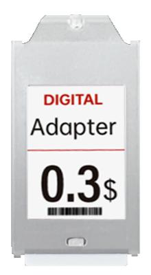

LSF130
1,30 inç askılı ESL
1,30 inç kompakt askılı ESL; 144 × 200 piksel ekran ve 7 renk LED göstergesi.
144 × 200IP540 – 40 °C
Teknik detayları incele
- Ekran boyutu
- 1,30 inç
- Gövde ölçüleri
- 51.7 × 26.4 × 6.7 mm
- Ekran alanı
- 19.4 × 27.0 mm
- Ağırlık
- 15 g
- Çözünürlük
- 144 × 200
- Piksel yoğunluğu
- 188 DPI
- Ekran renkleri
- Siyah / beyaz / kırmızı veya Siyah / beyaz / kırmızı / sarı
- Pil
- 2 × CR1632 280 mAh
- Pil ömrü
- 6 yıl (günde 2 güncelleme; üretici verisi)
- Değiştirilebilir pil
- Hayır
- NFC
- N/A (kaynakta mevcut değil)
- LED göstergesi
- 7 renk
- Koruma sınıfı
- IP54
- Çalışma sıcaklığı
- 0 – 40 °C
- Çalışma nemi
- 45 – 65 %RH
- Çalışma frekansı
- 2402 - 2481 MHz
- Sertifikalar
- CE, RoHS, FCC